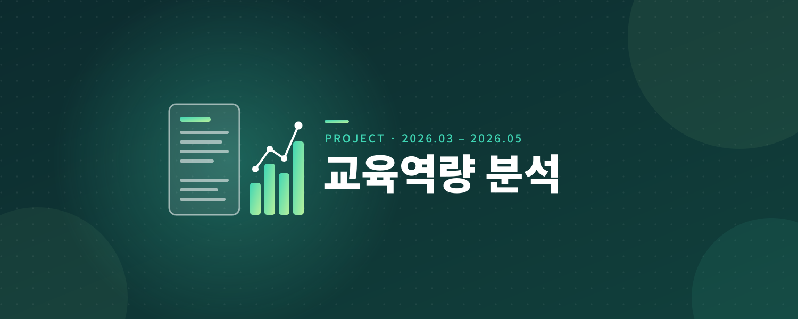
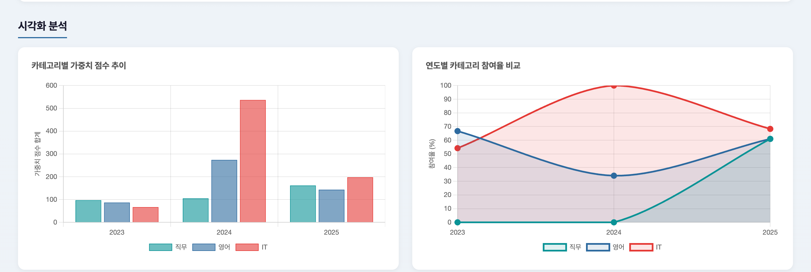
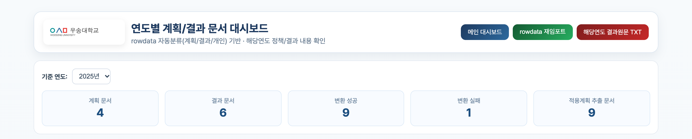
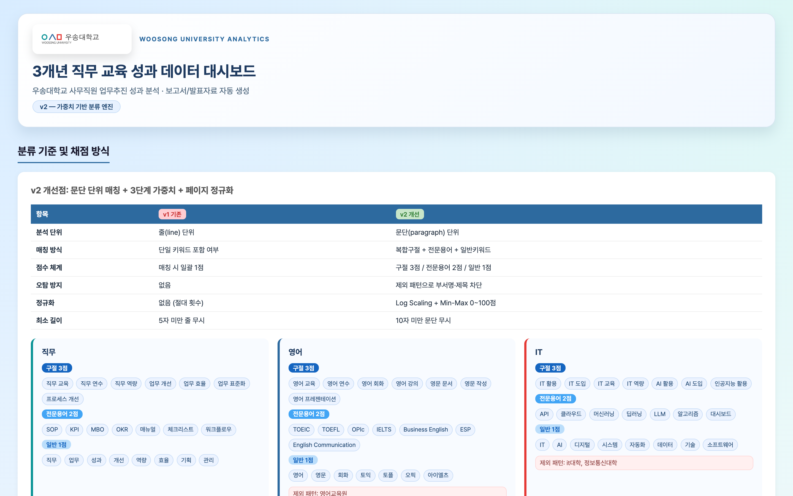

우송대학교 사무직원 교육역량 분석·보고서 자동화
2026.03 – 2026.05 · 우송대학교

프로젝트 간단 설명
우송대학교 사무직원의 활동·교육 자료(HWP·PDF·Excel·DOCX)를 통합 분석해 연도·부서별 현황을 대시보드로 시각화하고, LLM 기반 종합보고서(Word·PowerPoint·HTML·CSV)를 자동 생성하는 시스템입니다.
주 시도들
- 파일 형식별 추출 결과를 공통 텍스트·메타데이터 구조로 표준화했습니다.
- 한글 NFC 정규화, 연도·부서·담당자 보정, 중복 방지 규칙으로 데이터 품질을 관리했습니다.
- 가중치 분류 엔진과 Flask·Chart.js 대시보드를 구현하고 Gemini는 검증된 수치의 서술 보강에만 사용했습니다.
기술 및 리소스
- Python, Flask, SQLite, Chart.js, Gemini
- pdfplumber, LibreOffice, hwp5txt
- DOCX, PPTX, HTML, CSV, TXT 자동 생성
담당 역할
- 데이터 수집·전처리 및 분류 기준 설계
- 백엔드·대시보드 구현, LLM 연동
- 보고서 자동화 및 결과 정합성 검증
성과
-
개인 분석 레코드 350건, 총 1,136페이지, 54개 고유 부서의 자료를 분석했습니다.

역량 카테고리별 가중치와 연도별 점유율 차트 -
개인 문서 452건, 계획 문서 12건, 결과총괄 문서 18건을 통합 관리했습니다.

연도별 계획·결과 문서 대시보드 -
정량 계산과 생성형 AI의 책임을 분리해 보고서 수치의 신뢰성을 확보했습니다.

3개년 직무 교육 성과 대시보드의 분류 기준과 가중 방식
시스템 구조와 기술적 의사결정
- PDF·HWP·DOCX·Excel별 추출기를 공통 텍스트·메타데이터 구조로 연결해 이후 분류 로직이 원본 형식에 의존하지 않도록 했습니다.
- 공식 교육이수현황은 참여율과 교육시간의 근거로, 개인보고서는 업무 적용 사례와 역량 분포의 근거로 분리했습니다.
- 구절 3점, 전문용어 2점, 일반 키워드 1점의 가중치와 제외 패턴, 페이지 수 정규화를 적용했습니다.
- Gemini는 통계 계산이 아닌 검증된 데이터의 보고서 문장 생성에만 사용하고, 실패 시 Ollama 또는 기본 문장으로 폴백합니다.
검증과 개선 방향
- NFC 정규화, 연도·부서·담당자 보정, 중복 방지, 분류 버전 관리와 재채점 기능으로 재현성을 확보했습니다.
- 향후 정답 라벨 기반 분류 정확도 평가, 관리자 수정 이력, 조직별 권한 관리와 운영 배포 자동화를 보강할 수 있습니다.